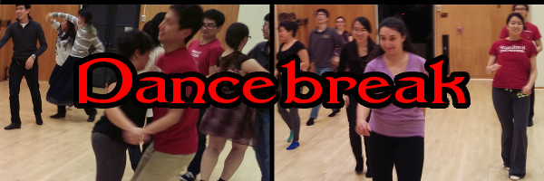

Tips For Running Dancebreak
These tips for running Dancebreak sessions are focused on helping us survive and thrive in the long-term. To that end, here are the 3 main priorities to keep in mind, starting with the highest:
Most DJs are probably expecting just #3, but that is, in fact, the lowest priority one!
- Ask for help!
It's okay to have help, especially from other Dancebreak officers and regulars. But remember that you are ultimately in charge of (and responsible for) all the following.
Priority 1: Keep Dancebreak in Roble Gym's big studio
The best location for Dancebreak is Roble Gym's big studio. It is by far the best (biggest) dance studio, with the best availability, in a great location, with excellent amenities. Dancing anywhere else will result in far fewer attendees, especially new dancers, and thus Dancebreak's slow death.
But, Dancebreak can use it only because the TAPS Department lets us, and they'll ban our usage if we're bad studio users.
- Make sure everyone knows the
important studio-use rules.
Keep the studio clean:
- No food.
- No drinks (except water in a resealable container).
- No glass.
- No street shoes.
- Don't let anyone in through the building-exterior doors. (Keep them closed at all times.)
- Stop all music
10 minutes before closing, then make everyone leave
promptly.
Give everyone, including yourself, plenty of time to pick up and leave Roble Gym. Building managers require everyone to exit the building before closing. Otherwise, they report violators to the TAPS Department.
- Be polite, but firm and prompt
in fixing violations.
If you are busy correcting violations, then you are wasting your and the dancers' valuable studio time. If you have a "zero-tolerance" policy, then people are less likely to try breaking rules.
Don't negotiate ("in a minute," "after this dance," "it's okay this one time," "it's my friend"). It wastes valuable time. It also implies that you might allow violations.
Correct violations immediately: visible, uncorrected violations convey the message that they're permitted.
Always be polite, but firm.
Priority 2: Make new attendees want to come back
New Dancebreak attendees will want to return if they had fun and felt welcomed into our community. Dancing is already intimidating, especially for those who don't know how to dance. It's even moreso if they don't know anyone.
- Proactively engage with new
folks.
- Talk to new people (more than just a "Hello"). Dance with each one.
- If a lot of new people come, take a few minutes to have the whole group welcome them.
- Explain to them how Dancebreak works.
- Ask them to sign up for our mailing list.
- Help new dancers enjoy
themselves.
- Do a "dance with strangers."
- Play more (and slower-tempo) music that allows them to do the dances they know.
- Help them with their dancing. Be great leads or follows. Gently ask them if they would like tips.
- Encourage them to dance, especially if they say they can't. ("I don't know how to dance." "No problem, I'd love to help you learn/practice!")
- Learn what Richard taught the previous week in his classes, especially Social Dance I, and play plenty of songs for them to practice with.
- Teach them an easy, useful dance choreography, like Bus Stop (or Night Fever, Dancebreak's unofficial official line dance). Then have everyone dance it to music.
- Create 2 song playlists.
If you don't feel comfortable selecting songs on-the-fly, then create 2 playlists beforehand:
- Find out what your regulars like, and build one 90-minute playlist based on that.
- Build a second 90-minute playlist focused on music for Richard's classes' topics, particularly Social Dance I (see previous TIP).
- Select songs based on the dancers present in the big studio, with more emphasis on the needs of new dancers.
Priority 3: Play great dance music
- Read
Richard Powers's DJ Tips.
Really take to heart the main, enumerated points at the top!
- Double-check with experienced
DJs.
If this is the first time you're DJing, re-read the previous TIP (i.e. re-read Richard's "DJ Tips" page)!
Then ask other Dancebreak DJs for suggestions and tips.
- Listen to your music through
the device's speakers; never headphones.
Or, if possible, find a moment when the big studio is empty and listen through those speakers.
Do not listen with your headphones. What you hear will be far clearer than what dancers can through the big studio's speakers and acoustics and fellow dancers' bodies. In the big studio, beats may be less clear, and music may be less crisp. If you can hear the important song components through your phone's or laptop's speakers, then there's a good chance that they'll be clear enough in the big studio.
Then ask other Dancebreak DJs for suggestions and tips.
- Play slower music than might
be good for yourself.
For new dancers, with less experience than you (or none), tempos that are comfortable for you are probably too fast for them. Use 5-10% slower tempo music, or the lower end of the "acceptable range" tempos on Richard's "DJ Tips" page. Make them feel like they can dance, rather than cannot.
- Be wary of streaming services,
like Spotify.
Prefer to use song files stored on your own device.
Many songs used in the social dance community are edited versions, while streaming services only provide the originals, which can be harder to dance to (or undanceable). Also, some services, like Spotify, are known to replace uploaded edited versions with the original ("correct") versions!
- Avoid songs with fun lyrics
and dull melodies.
As Richard notes on his "DJ Tips" page, "dancers are too occupied with dancing to be listening to the lyrics." This is especially true for new dancers. If the music is boring, it won't matter how interesting the lyrics are.
- Don't play your
"favorite" songs that aren't
danceable.
No matter how long you've been dying to dance to them in the big studio, if they're not objectively danceable then you're wasting the dancers' valuable time and interest.